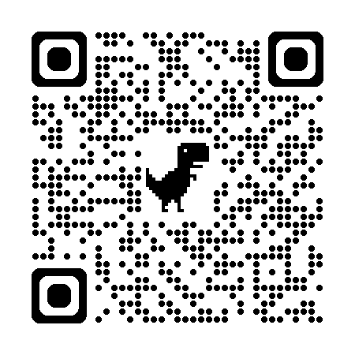

Jak bychom mohli zvýšit informovanost o dostupných sociálně-zdravotních službách v JmK?
Brno, 24. 9. 2024

Plán workshopu
- První část
- Shrnutí předchozích aktivit projektu
- Prezentace nasbíraných dat v terénu
- Pauza na ☕ (cca 20 minut)
- Druhá část
- Co nám data říkají?
- Definice a prioritizace příležitostí
- Pauza na ☕ a 🥪 (cca 40 minut)
- Třetí část
- Rozpracování konkrétních návrhů
- Vzájemné sdílení a další kroky
další pauza yo
Pravidla
- Jste tu dobrovolně
- Kdykoli se ptejte na cokoli – lepší teď než pozdě
- Jaký si to uděláme, takový to budeme mít
- Žádný nápad není špatný, možná jen nepřišel v pravou chvíli
- Pro dnes zapomeňte „To nejde, protože...“
- Vzájemný respekt ✊
Design
"Everyone designs who devises courses of action aimed at
changing existing situations into preferred ones
."
"Designuje ten kdo navrhuje kroky zaměřené na
změnu stávajících situací v preferované."
Herbert Simon
Design zaměřený na člověka
- buzzword? 🫠
- HCD – human-centered design
- Cílem je strukturovaně hledat účelná řešení problémů
- Dvě klíčové části
- Definice problému
- Hledání těch správných řešení pro problém
- důraz na multidisciplinární spolupráci
- lze využít na služby, mobilní aplikace, spodní prádlo – cokoli, co lidé využívají a něco od toho čekají
Design zaměřený na člověka II
- střídání rozbíhavého a
sbíhavého myšlení
- cesta jak se nezaseknout u jednoho nápadu
- demokratizace rozhodovacího procesu
- používá spousta technologických firem
- anebo zástupci veřejné správy ve Skandinávii či anglosaském světě
💎 Dvojitý diamant II 💎
-
nejvíc buzzword, ale zároveň užitečná metafora a mnemotechnická pomůcka
- ilustruje jednotlivé kroky návrhového procesu
- discover > define > develop > deliver
-
nasbírat zpětnou vazbu a znovu (a lépe)
- dneska se tím procesem pokusíme co nejvíc (byť trošku v rychlíku) projít
Nástrojový aparát
- zpětná vazba
- prototypy
- empatie
- (agilní) projektový management
- copywriting a srozumitelné psaní
-
vizuální pomůcky (diagramy, skeče, ilustrace, ...)
- strukturovaná práce s časem
- střídání skupinové a individuální práce
- lepíííky 🌈
- facilitace
Dojmy? Emoce? Frustrace?
Chuť odejít? Chcu to vědět!
Co je dobrá služba?
Jaké služby se vám dobře v životě používají?
- gastro
- cestování
- zdraví
- vzdělávání
- ...
Skupinová práce
- Shodněte se ve skupince na jedné dobré a jedné špatné službě
- Ke každé napište tři důvody proč je špatná nebo dobrá
- Máte na to 15 minut
- Následně si společně nasdílíme
Jedna dobrá služba
Jedna špatná služba
Ke každé (alespoň) tři důvody
Druhá část workshopu
- Představím kontext našeho projektu Access 4 all
- Dostanete data, která od července sbíráme
- Na jejich základě budeme vymýšlet nápady a nástroje jak se přiblížit k našemu cíli
-
„Jak bychom mohli obyvatelům Jihomoravského kraje přinést lepší povědomí o existujících sociálních a
zdravotních službách, které lze v dnešní době využívat?“
Hlavní východiska
- Navazuje na strategický cíl kraje
-
Zvýšení informovanosti obyvatel Jihomoravského kraje o službách v sociální a zdravotní oblasti
- Nízká provázanost sociálních a zdravotních služeb
- Nízké povědomí o dostupných službách
- Stárnoucí populace a neúprosná demografie a zvyšující se poptávka po službách
- Chybějící "informační ústředna"
Data k prostudování
- poslední část před pauzou ☕
- 20 minut k prostudování
- 6 listů papíru
- Všichni nemusí stihnout vše
- Zkuste si poznačit (klidně víc než míň):
- 3 věci, co vás zaujaly
- 2 věci, co vás překvapily
- 1 věc, co vás naštvala
- Pokud byste chtěli pracovat ve dvojicích, tak můžete, jen nejspíš v jiném prostoru abyste nerušili ostatní
Dostupná témata
- Nízká informovanost veřejnosti o dostupných službách v rámci sociálně-zdravotního pomezí
- Nízká informovanost poskytovatelů služeb o sobě navzájem
- Informační portál
- Řešení problému až už je pozdě
- Praktičtí lékaři jako klíčový aktér ale i bariéra
- Budování důvěry ve služby
3 věci, co vás zaujaly
2 věci, co vás překvapily
1 věc, co vás naštvala
Samostatná práce cca do 11:05
Pauza na ☕ do 11:15
☕ ☕ ☕
Sejdeme se zpátky v 11:15
☕ ☕ ☕
Zjištění z dat
- Co vás zaujalo? Překvapilo? Rozhořčilo?
- Sdílení ve skupinách na 15 minut
-
Hlídejte si čas ať se dostane na všechny
- Ideálně si vylepte na flipchart, podobná témata k sobě
- Někdo ve skupince dělejte poznámky, můžou se hodit v dalším průběhu
Vítejte v Zóně kvílení
- Anglicky groan zone
- cílem je vybrat si jeden problém, kterým se budeme dále zabývat
- zjednodušeně jsme v situaci, kdy máme spoustu možností a pro některou se musíme rozhodnout
- Vždycky je snazší nápady generovat než zahazovat
-
Náročný a zároveň klíčový moment
Jak na to?
- Existuje spousta méně či více sofistikovaných technik
-
dot voting, value vs. effort matice, SWOT analýza, ...
- zvažte svou expertízu, znalosti, zajímavost tématu, proveditelnost
- facilitátorstvo pomůže
- zároveň – jsme na školení, udělejme maximum, ale radši si vyberte téma s kterým se bude dobře pracovat dál
než to nutně nejvíc perfektní
Prioritizace témat do 11:50
Prioritizace problému
- Zkuste si během 10 minut vybrat problém, který budete chtít dále v průběhu workshopu rozvíjet
- Pokud se ve skupince zaseknete tak se nebojte ozvat
- Otázky než začneme?
Jaké problémy jste si vybrali?
Mají ostatní týmy nějaké připomínky?
Detailnější definice problému
- Vybrali jsme si ten nejdůležitější problém, pro něž chceme hledat řešení
- Potřebujeme si jej detailněji popsat, abychom měli shodu na jeho podobě
- Klíčová dovednost umět správně popsat konkrétní problém
- existuje spousta nástrojů, technik, pracovních listů apod.
- My na to půjdeme jednodušší cestou
5W metoda
- Opět z angličtiny:
- When - kdy
- What - co
- Who - kdo
- Why - proč
- Where - kde
- Jedna z technik, jak si snadno tzv. "zarámovat" problém nebo příběh
- 5 klíčových kvalit správné definice problému
- přemýšlejte nad tím jako nad příběhem, který někomu chcete vyprávět
Jak bychom mohli ... ?
- Teď trochu zpomalíme
- Budeme hledat jednotlivé cesty jak bychom mohli daný problém vyřešit
- Položte si v duchu otázku "Jak bychom mohli vyřešit / odstranit / zlepšit (doplňte vámi vybraný
problém)?"
- Zkuste vymyslet co nejvíce nápadů, které by vybranému problému mohly pomoci
- Žádný nápad není špatný – radši více špatných než čekání na ten jediný správný
-
tentokrát každý sám potichu - jeden nápad na jeden lepík
- Máte na to 5 minut
Vzájemné sdílení
- Popište problém který řešíte
- Jak jste k němu došli?
- Proč stojí za to ho řešit
- Jakých pět nejlepších nápadů ho může řešit?
- Které řešení je to nejlepší?
- Co vám šlo?
- Co vám nešlo?
- Co byste dělali jinak?
Co by se dělo normálně dál?
- Prioritizace nejzajímavějších nápadů
- Tvorba prototypů a dopracování návrhů
- Sběr a vyhodnocení relevantní zpětné vazby
- Ideálně nasazení, pilot, ...
Bohužel na to dneska nemáme dost času 😔
Jaké to bylo?
- Co si odnášíte?
- Pro sebe osobně?
- Pro svou práci?
- Dojmy?
- Jak se vám takto spolupracovalo?
Použité zdroje a nástroje